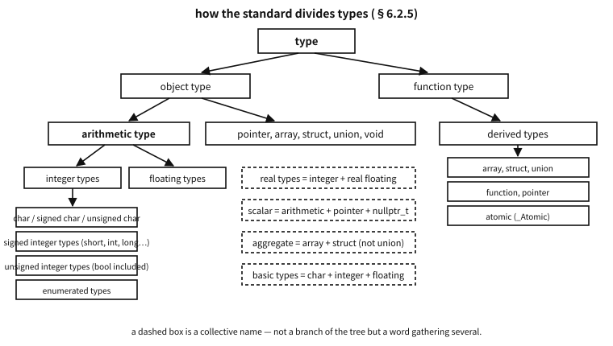

27 The families of types — how the standard divides them
What to know first
Looking back
Chapter 24 kept using the word “type” while writing int x = 0;. So what exactly does a type settle? Name three.
A. Four can be named.
- Size — how many bytes this value occupies (chapter 4).
- Representation — through what eye those bytes are read (chapter 6 and 7′s two’s complement and IEEE 754).
- Permitted operations — what may be done (
%only on integers,++only on real types and pointers). - Contract — what the compiler checks and what it guarantees.
This chapter sets out what branches exist under that word “type”, exactly as the standard divides them.
The need for this chapter, and its context
By the end of this chapter
<stdint.h> that write their width into their name. The next chapter’s integers, and the one after that’s promotion, stand entirely on this vocabulary.The questions this chapter answers
voidmeans “nothing at all”, so why is it a type?- Then is
intalso a separate type fromsigned int? By the same logic it ought to be. - So are qualifiers and storage classes the only words a declaration takes?
- “Optional”? Is there really a machine without
uint8_t?
27.1 The four things a type settles
Given the same eight bytes, reading them as a double gives 3.14 and as a long gives 4614253070214989087 (exactly as chapter 7 showed). Bytes do not know what they are; only the type knows.
| What a type settles | Example | More |
|---|---|---|
| size | sizeof(int) = 4 | chapter 4 |
| representation | -1 as an int is FF FF FF FF | chapters 6 and 7 |
| permitted operations | % only on integers, / on arithmetic types | chapters 29 and 50 |
| contract | const says “I will not change this” | chapters 24 and 53 |
Table 27.1 — What a type settles
So “knowing a type” is not knowing syntax but knowing those four. And the standard settles those four branch by branch.
27.2 The first division — object types and function types
The topmost division is in two.
| Branch | What it is | Examples |
|---|---|---|
| object type | describes a place that holds a value | int, double, struct point, int[10], char * |
| function type | describes something that works — by return type and parameters | int(void), void(int, char *) |
Table 27.2 — Object types and function types
This division shows itself in practice. sizeof cannot be applied to a function type, and being no object it has neither size nor alignment. That is why treating a function as a value means turning it into a pointer to a function (chapter 64).
27.2.1 Complete and incomplete types
Object types divide again — is the size known?
| State | What it cannot do | Example |
|---|---|---|
| complete type | (no restriction) | int, struct point once its definition is seen |
| incomplete type | sizeof is unusable, and no object of it can be made | an array with no size int a[], a struct node declared by tag only |
void | an incomplete object type that cannot be completed | its set of values is empty |
Table 27.3 — What an incomplete type cannot do
An incomplete type is not a defect but a tool. It can express “I know this type exists and nothing of its insides”, which is what makes an opaque type possible — hiding the insides in a header and passing only pointers (FILE * is the archetype). Hiding the insides means callers cannot depend on them, and that is the design gain (chapter 48).
Q. void means “nothing at all”, so why is it a type?
A. Because it does three different jobs in three places.
void f(void)— “there is no value to return” and “there are no parameters”.(void)printf(…)— a cast that writes down “I am discarding this value”.void *— “what kind of object it points at is not settled yet”. This one alone is a complete object type (being a pointer, it has a size).
The standard’s definition is “an incomplete object type whose set of values is empty and that cannot be completed”. So no void variable can be made and sizeof(void) is not usable in the standard — GCC gives 1 as an extension (chapter 13′s grey area).
27.3 The basic types
What the standard calls the basic types is exactly these three groups together.
| What the basic types are (§6.2.5p18) | Note |
|---|---|
char | just one. One of the three character types below |
| the signed and unsigned integer types | short, int, long, long long and their unsigned partners |
| the floating types | float, double, long double, and complex |
Table 27.4 — The basic types, as the standard has them
Enumerated types are not basic types. They are integer types, but they do not appear in the list of basic types — a commonly confused spot.
The standard nails down one more sentence about them: “even if the implementation defines two or more basic types to have the same representation, they are nevertheless distinct types.” The character types of the next section are the example of that sentence.
27.3.1 There are three character types
| Type | Signedness | Where it is used |
|---|---|---|
char | the implementation settles it — the same range, representation and behaviour as either signed char or unsigned char | for holding characters |
signed char | signed | a small signed integer |
unsigned char | unsigned | for looking at bytes (chapter 49) |
Table 27.5 — The three character types
The heart of it is the sentence a footnote nails down — whichever choice was made, char is a separate type from the other two and is compatible with neither. There are three, not two.
Q. Then is int also a separate type from signed int? By the same logic it ought to be.
A. No. And that asymmetry is exactly what makes char special. int and signed int are the same type — two spellings of one thing. Whereas char, signed char and unsigned char are three different types.
★ The standard shows this in a table of its own. §6.7.3.1 lists the permitted combinations of type specifiers, and spellings listed in the same item are the same type.
| The standard’s item | So |
|---|---|
char | ★ an item all to itself |
signed char | ★ an item all to itself |
unsigned char | ★ an item all to itself |
int, signed, signed int | the three share one item — one type, three spellings |
unsigned, unsigned int | two in one item |
Table 27.6 — The clauses that make bool an integer type
Only the character types are scattered across three items. Every other integer type has just two sides, signed and unsigned, and writing signed changes nothing.
This book asked the compiler directly. _Generic refuses two branches of the same type, which makes it usable as a decision procedure.
_Generic((i), int: "a", signed int: "b") /* error: two compatible types */GCC rejects it with “_Generic specifies two compatible types” — the compiler declaring that the two are one type. Write char, signed char and unsigned char as three branches, by contrast, and it says nothing; each goes to its own.
The place the difference becomes visible is pointers. Measured, it splits like this.
char c; take_signed_char(&c); /* warning: … differ in signedness */
int i; take_signed_int(&i); /* not a word --- they are the same type */So char * is not compatible with signed char *, even on a machine where char is signed and the ranges are identical — the earlier rule that types with the same representation are nevertheless distinct (§6.2.5) applies here in full.
A common misconception. “Then int x : 3; must be the same as signed int x : 3;”
★ This is the one exception. In a bit-field, plain int parts company with signed int, because the standard says that if the type specifier used is int, it is implementation-defined whether the bit-field is signed or unsigned (§6.7.3.2, footnote).
So in a bit-field you always write signed int or unsigned int. Leave it as plain int and x = -1 reads back as -1 on one compiler and as 7 on another. On the machine this book used it was the signed one, but that is this machine’s business, not a rule.
The rule, then: signed is optional decoration on other integer types, a word that changes the type on char, and, on a bit-field, a word whose absence hands the meaning to the implementation.
A common misconception. “char is just signed char”
It depends on the platform. On x86 Linux it is signed; on ARM Linux and many embedded toolchains it is unsigned. CHAR_MIN in <limits.h> being 0 or SCHAR_MIN tells you which.
The difference bites quietly in one place. Put a byte of 128 or more into a char and compare, and on the signed side it is negative.
char c = 0xFF;
if (c == 0xFF) { … } /* does not hold with a signed char */So the discipline is simple — char for letters, unsigned char for bytes, int8_t for small numbers. Separate the three uses by name and this trap never appears.
Platform note. C23: bool is an unsigned integer type
C23′s §6.2.5p8 says that bool together with the unsigned types corresponding to the standard signed integer types are collectively the standard unsigned integer types. So bool is an integer type, an arithmetic type, and a scalar.
The measurement confirms it — the type of bool + 0 is int (it was promoted). All that is special is the value: it is always 0 or 1, since putting any scalar into a bool gives 0 for zero and 1 for anything else. C99′s _Bool gained the keyword bool in C23, and <stdbool.h> became a header you may or may not include (chapter 87).
27.4 Integer, real, arithmetic — the collective names
From here comes the source of the vocabulary this book has been using. These names are not branches of the tree but words that gather several branches.
| Name | What it gathers (§6.2.5) | Where the name is used |
|---|---|---|
| integer types | char + signed integer + unsigned integer + enumerated types | the operands of % and << |
| real types | integer types + real floating types (complex excluded) | the operands of ++ and -- (chapter 50) |
| arithmetic types | integer types + floating types (complex included) | the operands of +, -, *, /; what promotion acts on |
| scalar types | arithmetic types + pointers + nullptr_t (C23) | the condition of if and while, the operand of ! |
| aggregate types | array + struct — ★not union | the rules for initializer lists |
Table 27.7 — The collective names the standard gives types
In chapter 50′s tables of operator contracts you will meet cells such as “operand: a real type or a pointer”, and now they can be read exactly.
A common misconception. “A union is an aggregate too”
Not in C. Section 6.2.5p26 says only “array and structure types are collectively called aggregate types”. The union is missing.
The reason is that “aggregate” means holding several things at once. A union has only one member alive at a time (chapter 49′s active member), so it does not fit that definition.
C++ differs — there a union that meets the conditions is an aggregate. The difference shows when comparing the two languages’ initialisation rules.

Figure 27.1 — How the standard divides types. A dashed box is a name that gathers several branches.
27.5 Derived types — made out of what is there
New types can be constructed from object and function types, and what is so constructed is a derived type.
| Derivation | From what to what | More |
|---|---|---|
| array | from element type T to “array of T” | chapter 39 |
| structure | holding several types in sequence | chapter 47 |
| union | holding several types overlapping | chapter 49 |
| function | from return type T to “function returning T” | chapter 25 |
| pointer | from referenced type T to “pointer to T” | chapter 36 |
| atomic | _Atomic(T) — a conditional feature | chapter 85 |
Table 27.8 — Derived types — what comes from what
These constructions apply recursively. “An array of 10 pointers to int” and “a pointer to a function returning int” are both built that way. That recursion is exactly why chapter 65, “Reading declarations”, is hard, and the standard gathers three of them — array, function and pointer — under the name derived declarator types. Those three are precisely what must be unwrapped from the inside out when reading a declaration.
27.6 Qualifiers — a qualified edition of the same type
A type qualifier does not make a new type; it makes a qualified version. C23 fixes the list at four, and that is all of them.
| Qualifier | What it promises | Break it and | More |
|---|---|---|---|
const | I will not change it through this name | compile error (constraint violation) | chapter 24 |
volatile | it may change without my knowing, so do not remove or merge accesses | values go quietly wrong | chapters 14, 81 and 82 |
restrict | this object is reached only through this pointer | ★ undefined behaviour — no diagnostic | chapters 39 and 41 |
_Atomic | accesses to this object are not torn | a data race = undefined behaviour | chapter 85 |
Table 27.9 — What each type qualifier promises
A common misconception. “Isn’t register a qualifier too?”
No. And the confusion is very common. register is a storage-class specifier, of the same family as static, extern and typedef (chapter 45). The two do different jobs and sit in different syntactic slots.
| Type qualifier | Storage-class specifier | |
|---|---|---|
| What it qualifies | the type | the object (that name) |
| How many | all four may be combined | ★ in principle one |
| What it fixes | what may be done | lifetime, scope, linkage |
| Example | const volatile int | static int |
Table 27.10 — Type qualifiers and storage-class specifiers, side by side
One question separates them: “can it be pulled out with typedef?” const int is one whole type, so typedef const int ci; works; static is not part of a type, so typedef static int si; is a syntax error (measured: multiple storage classes in declaration specifiers).
27.6.1 A qualified edition is the same size as the original
A qualified type and an unqualified one have the same size, representation and alignment — what changes is only what may be done.
examples-en/ch26/qualifiers.c
/* See all four type qualifiers in one place.
The point: a qualified type is another edition of the same type - neither
its size nor its alignment changes. */
#include <stdio.h>
#include <stdalign.h>
struct big { char a[9]; };
int main(void)
{
puts("(1) a qualifier changes neither size nor alignment");
printf(" int : %zu / %zu\n", sizeof(int), alignof(int));
printf(" const int : %zu / %zu\n", sizeof(const int), alignof(const int));
printf(" volatile int : %zu / %zu\n", sizeof(volatile int), alignof(volatile int));
printf(" struct big : %zu / %zu\n", sizeof(struct big), alignof(struct big));
printf(" _Atomic big : %zu / %zu <- unchanged on this implementation\n",
sizeof(_Atomic struct big), alignof(_Atomic struct big));
puts("\n(2) the order is free and they may be combined");
const volatile int a = 1;
volatile const int b = 2; /* exactly the same type as above */
printf(" const volatile int a = %d, volatile const int b = %d\n", a, b);
puts("\n(3) _Atomic has two faces");
_Atomic int c = 3; /* written as a qualifier */
_Atomic(int) d = 4; /* written as a type specifier - same type */
printf(" _Atomic int c = %d, _Atomic(int) d = %d\n", c, d);
/* typedef int A[3]; _Atomic A x; <- cannot qualify an array: compile error */
puts("\n(4) const only says \"not through this name\"");
int x = 10;
const int *p = &x; /* cannot change it through p */
x = 20; /* but x itself still can */
printf(" changed x directly, so *p = %d <- const is a promise about the route, not the value\n", *p);
/* *p = 30; <- error: assignment of read-only location */
puts("\n(5) a qualifier may be added silently, never removed");
const int ci = 7;
const int *q = &ci; /* adding: allowed */
printf(" int * -> const int * passes; the reverse warns (-Wdiscarded-qualifiers), *q = %d\n", *q);
/* int *bad = &ci; <- warning: initialization discards 'const' qualifier */
return 0;
}
Output
(1) a qualifier changes neither size nor alignment
int : 4 / 4
const int : 4 / 4
volatile int : 4 / 4
struct big : 9 / 1
_Atomic big : 9 / 1 <- unchanged on this implementation
(2) the order is free and they may be combined
const volatile int a = 1, volatile const int b = 2
(3) _Atomic has two faces
_Atomic int c = 3, _Atomic(int) d = 4
(4) const only says "not through this name"
changed x directly, so *p = 20 <- const is a promise about the route, not the value
(5) a qualifier may be added silently, never removed
int * -> const int * passes; the reverse warns (-Wdiscarded-qualifiers), *q = 7
Output ① confirms it. const int and volatile int are both four bytes, aligned the same.
★ One caveat belongs on _Atomic. The standard does not require an atomic type to have the same size and alignment as its corresponding non-atomic type. If an implementation has to hide a lock inside, it may grow. The nine-byte struct in the example was unchanged here, but it need not be — that is the contract. Which is why atomic types come with a separate question, atomic_is_lock_free (chapter 85).
27.6.2 The order is free and they may be combined
As output ② shows, const volatile int and volatile const int are the same type. A qualifier may go before or after the type specifier, and all four may be used together.
Writing the same qualifier twice is allowed — it counts as appearing once. C23 did not open that door: the rule was already in C11 (C11 §6.7.3 p5 — “either directly or via one or more typedefs”), and C23 merely added the typeof route (§6.7.4.1 p6). Going through a typedef makes that easy to do by accident.
typedef const int ci;
const ci x = 1; /* const twice - legal, counts as once */The compiler kindly says so (GCC’s -Wduplicate-decl-specifier). Nobody writes it on purpose, but the rule saves programs where macros and typedefs meet.
27.6.3 Only _Atomic has two faces
Of the four, only _Atomic serves both as a qualifier and as a type specifier.
_Atomic int c; /* written as a qualifier */
_Atomic(int) d; /* written as a type specifier - the same type */Output ③ shows the two are the same. The parenthesised form exists because it is needed to wrap a complicated type — _Atomic(int *) is “an atomic pointer”, and int * _Atomic says the same thing but reads badly.
★ There is also one restriction peculiar to _Atomic: it cannot be applied to arrays or functions. There is no way to make a whole array untearable at once (measured: '_Atomic'-qualified array type). _Atomic int a[3]; is fine, but that means each element is atomic, not the array.
27.6.4 A qualifier is a property of the route, not of the value
Output ④ is this section’s point. Even with const int *p = &x;, x itself can still be changed. const does not say “this value is constant”; it says “I will not change it through this name.”
27.6.5 It may be added silently, never removed
Output ⑤ shows the direction. Passing an int * where a const int * is wanted is legal; the reverse warns (-Wdiscarded-qualifiers). Only the direction that increases qualification is allowed quietly.
★ There is a famous trap in this rule, though. Passing a char ** where a const char ** is wanted is not allowed: pointer compatibility does not carry one level down. Chapter 65 follows the standard’s clauses through that argument.
27.6.6 Where it attaches flips the meaning
The place a qualifier most often causes accidents is the pointer.
| Declaration | What is read-only |
|---|---|
const int *p | the pointed-to value |
int const *p | the same — only the order differs |
int *const p | the pointer itself |
const int *const p | both |
Table 27.11 — What const protects, depending on where it sits
One line separates them: a qualifier qualifies the thing immediately to its left; if there is nothing to its left, the thing to its right. That is clause C of chapter 65′s precedence rule, and it is split apart there by running it.
Q. So are qualifiers and storage classes the only words a declaration takes?
A. No. The standard divides what may appear in the declaration specifier slot into five families. This book treats each family in the chapter where it actually causes trouble.
| Family | The words | Gathered in |
|---|---|---|
| type specifiers | void, char, int, struct, enum, typeof, … | this chapter |
| type qualifiers | const, volatile, restrict, _Atomic | this section |
| storage-class specifiers | auto, constexpr, extern, register, static, thread_local, typedef | chapter 45 |
| function specifiers | inline, _Noreturn | chapter 25 |
| alignment specifier | alignas | chapter 48 |
Table 27.12 — The vocabulary of types and where each is gathered
★ Those five are all of them. So stacking one from each family, as in static const volatile unsigned long x;, is fine; taking two from one family is not, where that family is limited to one (as storage classes are).
27.7 Types with their width in the name — <stdint.h>
That was the types the language gives; now the ones the standard library names for us. They are the direct answer to the problem that int’s size differs by implementation (the next chapter).
examples-en/ch26/stdint_kinds.c
/* The three families of <stdint.h>, and the traps of uint8_t. */
#include <inttypes.h>
#include <limits.h>
#include <stdint.h>
#include <stdio.h>
int main(void)
{
puts("[three families — they demand different things]");
printf(" %-16s %-6s %s\n", "type", "size", "what it guarantees");
printf(" %-16s %-6zu %s\n", "uint8_t", sizeof(uint8_t),
"exactly 8 bits, no padding (optional)");
printf(" %-16s %-6zu %s\n", "uint_least8_t", sizeof(uint_least8_t),
"smallest with at least 8 bits (required)");
printf(" %-16s %-6zu %s\n", "uint_fast8_t", sizeof(uint_fast8_t),
"usually fastest with at least 8 bits (required)");
printf(" %-16s %-6zu %s\n", "uint_least32_t", sizeof(uint_least32_t), "at least 32 bits");
printf(" %-16s %-6zu %s\n", "uint_fast32_t", sizeof(uint_fast32_t), "at least 32 bits, speed first");
printf(" %-16s %-6zu %s\n", "uintmax_t", sizeof(uintmax_t), "the widest integer (required)");
printf(" %-16s %-6zu %s\n", "uintptr_t", sizeof(uintptr_t), "void* round trip (optional)");
puts("\n[trap 1: uint8_t is usually unsigned char, so it leaks as a character]");
uint8_t age = 65;
printf(" with %%u: %u\n", age);
printf(" with %%c: %c <- 'A' comes out, not 65\n", age);
printf(" putchar(age) is the same trap\n");
puts("\n[trap 2: arithmetic promotes to int — this is not 8-bit arithmetic]");
uint8_t a = 200, b = 100;
printf(" a + b = %d <- computed as int: 300, it did not wrap\n", a + b);
printf(" (uint8_t)(a+b) = %u <- put it back to make it wrap\n", (uint8_t)(a + b));
printf(" sizeof(a + b) = %zu <- the result is 4 bytes\n", sizeof(a + b));
puts("\n[trap 3: being an alias, the format must follow the alias]");
printf(" with PRIu8: %" PRIu8 "\n", age);
printf(" UINT8_C(200) is %u, UINT8_MAX is %u\n", UINT8_C(200), UINT8_MAX);
puts("\n[which to use when]");
puts(" protocols, file formats, registers -> exact width (uint32_t)");
puts(" portability first, width at least -> minimum width (uint_least16_t)");
puts(" loop counters, local sums -> fastest (uint_fast32_t)");
puts(" sizes, indices, byte counts -> size_t (<stddef.h>)");
return 0;
}
Output
[three families — they demand different things]
type size what it guarantees
uint8_t 1 exactly 8 bits, no padding (optional)
uint_least8_t 1 smallest with at least 8 bits (required)
uint_fast8_t 1 usually fastest with at least 8 bits (required)
uint_least32_t 4 at least 32 bits
uint_fast32_t 8 at least 32 bits, speed first
uintmax_t 8 the widest integer (required)
uintptr_t 8 void* round trip (optional)
[trap 1: uint8_t is usually unsigned char, so it leaks as a character]
with %u: 65
with %c: A <- 'A' comes out, not 65
putchar(age) is the same trap
[trap 2: arithmetic promotes to int — this is not 8-bit arithmetic]
a + b = 300 <- computed as int: 300, it did not wrap
(uint8_t)(a+b) = 44 <- put it back to make it wrap
sizeof(a + b) = 4 <- the result is 4 bytes
[trap 3: being an alias, the format must follow the alias]
with PRIu8: 65
UINT8_C(200) is 200, UINT8_MAX is 255
[which to use when]
protocols, file formats, registers -> exact width (uint32_t)
portability first, width at least -> minimum width (uint_least16_t)
loop counters, local sums -> fastest (uint_fast32_t)
sizes, indices, byte counts -> size_t (<stddef.h>)
27.7.1 What separates the three families is “what they demand”
| Family | Names | What it guarantees | Is it there? |
|---|---|---|---|
| exact width | int8_t, uint32_t, … | exactly N bits, no padding bits, two’s complement | optional — defined only by implementations that have such a type |
| minimum width | int_least8_t, uint_least32_t, … | the smallest with at least N bits | 8, 16, 32, 64 are required |
| fastest | int_fast8_t, uint_fast32_t, … | usually the fastest with at least N bits | 8, 16, 32, 64 are required |
| holding a pointer | intptr_t, uintptr_t | a void * put in and taken back out compares equal | optional (chapter 36) |
| widest | intmax_t, uintmax_t | holds the value of any integer type | required |
Table 27.13 — The three families of <stdint.h>
The measurement shows the difference — on this machine uint_fast32_t was eight bytes. Thirty-two bits would have sufficed and it took sixty-four; that is what “fast” means (matching the register width is faster). It is not a type for saving space.
Q. “Optional”? Is there really a machine without uint8_t?
A. Rare, but yes. And “optional” is only half right — the standard’s condition is more precise.
“ If an implementation provides standard or extended integer types with a particular width and no padding bits, it shall define the corresponding typedef names. (§7.22.1.1) ”
So an implementation does not leave them out as it pleases: it cannot define them when the machine has no such type. uint8_t is the case in point — some DSPs have a 16-bit char, so there is no type that is “exactly 8 bits” at all, and uint8_t goes undefined. On a machine where CHAR_BIT is not 8, every width that is not a multiple of it drops out together.
★ The wider the type, the better the odds. A machine without uint32_t is far rarer — it would have to be one where no integer type is exactly 32 bits, such as an old mainframe with a 36-bit word. So if you are worried about absence, the worry is almost always about uint8_t and uint16_t.
Practice judges it this way. If you face only desktops, servers and mainstream embedded targets, use the exact-width types freely (rungs 1–2 of chapter 13′s ladder). If you write a library facing every C implementation, use the minimum-width types and, where exact width is genuinely required, let the build say so with something like static_assert(sizeof(uint8_t) == 1) (rung 3).
27.7.2 The three traps of uint8_t
The most used, and the most injuring, so it gets its own treatment.
Counter-example.
- A number goes in and a letter comes out
uint8_t age = 65;
printf("%c\n", age); /* 'A' comes out */
putchar(age); /* the same trap */uint8_t is usually an alias for unsigned char, so it slots straight into a place expecting a character. The types match, so the compiler says nothing.
uint8_t is safer used as “a byte” than as “a small number”. For a small number a person will read, use int or int16_t; if it must be printed, use %u (it is promoted, so it arrives as unsigned) or PRIu8.
Counter-example.
- Thinking it is 8-bit arithmetic
uint8_t a = 200, b = 100;
a + b /* 300, not 44 */The measurement shows it. uint8_t is narrower than int, so before arithmetic it is promoted to int (the chapter after next). The computation happens in 32 bits, and to make it wrap you must put it back — (uint8_t)(a + b) is 44.
This is a safeguard rather than a defect: multiply two narrow types and the intermediate result is not cut off. Only the expectation that “I used an 8-bit variable so it will compute in 8 bits” must be abandoned.
Counter-example.
- Thinking it is a new type
A typedef makes an alias, not a new type (chapter 65). So uint8_t and unsigned char are the same type, and neither _Generic nor overloading can tell them apart. The measurement’s first output is the evidence.
For the same reason the compiler will not catch this.
void send(uint8_t port, uint8_t value);
send(value, port); /* swapped, and it stays silent */To distinguish them by type, wrapping in a struct is C’s way — struct port { uint8_t v; };. The price is clumsier syntax; what you buy is the compiler’s checking.
27.7.3 So which do you use
| In this place | use this | why |
|---|---|---|
| protocols, file formats, hardware registers | exact width uint32_t | the byte count is the contract (chapter 49) |
| portable code facing every implementation | minimum width uint_least16_t | exact width is optional |
| loop counters, local computation | fastest uint_fast32_t, or simply int | where speed is worth more than width |
| sizes, indices, byte counts | size_t (<stddef.h>) | it is sizeof’s type and covers any array |
| the difference of two pointers | ptrdiff_t (<stddef.h>) | a sign is needed (chapter 39) |
| a small number a person will read | int | it gets promoted to int anyway |
Table 27.14 — Choosing the integer type that fits the place
Emphasise that last row as practice’s default. With no particular reason, use int. The types with a width in their name are a tool for places where the width is the contract, not something good to sprinkle about for thrift.
In practice. Where does size_t live?
A frequently confused spot, so it is written down. size_t and ptrdiff_t belong not to <stdint.h> but to <stddef.h>. <stdint.h> is the home of the types with a width in their name; <stddef.h> is the home of the types the language itself uses (size_t, ptrdiff_t, nullptr_t, max_align_t).
In practice another header such as <stdio.h> often drags size_t in for you, which blurs the distinction — and the day that header changes, it breaks. The discipline is to include the header that defines the type you use (the same grain as chapter 59′s story about names).
27.8 Summary — the standard’s words and this book’s chapters
| The standard’s word | What it is | The chapter that faces it |
|---|---|---|
| object type / function type | what holds a value / what works | here, chapters 25 and 64 |
| complete / incomplete type | is the size known | here, chapter 48 |
| basic types | char + integer + floating | here, chapters 28 and 50 |
| character types | the three char, signed char, unsigned char | here, chapters 8 and 43 |
| integer types | char + integer + enumerated | chapter 28 |
| real types | integer + real floating | chapter 50 |
| arithmetic types | integer + floating | chapter 30 (promotion) |
| derived types | array, struct, union, function, pointer, atomic | chapters 36–39, 46–48 |
| scalar types | arithmetic + pointer + nullptr_t | chapters 31 and 37 |
| aggregate types | array + struct | chapters 39 and 47 |
| qualified types | const, volatile, restrict, _Atomic — four | this ch., 23, 38, 79 |
| storage-class specifiers | static, extern, register, … seven | chapter 45 |
| function specifiers | inline, _Noreturn | chapter 25 |
Table 27.15 — The standard’s words and the chapter that faces each
The families are laid out. From the next chapter we dig into its cells one at a time — first integers. The family passed over here in the single phrase “the signed and unsigned integer types” gets its insides, its ranges, its representation and its accidents.